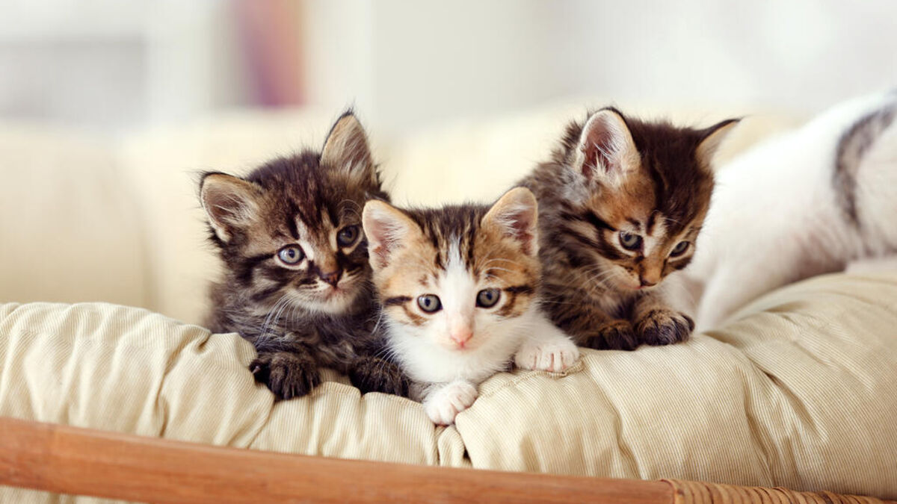

Tudo sobre o felinos
Descrição:
O leão é um animal mamífero felino,vertebrado e carnívoro de grande porte. O seu nome científico é Panthera leo. Conhecido como o Rei da Selva, o leão pode ser encontrado na Ásia, África e Europa. Atualmente, é classificado com vulnerável à extinção pela União Internacional para a Conservação da Natureza e dos Recursos Naturais (IUCN). Entre as principais ameaças a conservação dos leões estão a caça indiscriminada e a redução de seus habitats.
Classificação biológica:
- Reino: Animalia
- Filo: Chordata
- Classe: Mammalia
- Ordem: Carnivora
- Família: Felidae
- Gênero: Panthera
- Espécie: P.leo
Sub-espécies
- Leão-sul-africano
- Leão-do-atlas
- Leão asiático
- Leão-do-cabo
Hábitat e modo de vida
A maior parte dos leões que hoje vive na natureza são encontrados nas savanas da África e demais regiões semi-desérticas. Ele já foi extinto de muitas áreas de florestas da Ásia e Europa. Eles vivem em grupos de até 40 indivíduos, sendo em sua maioria fêmeas, lideradas pelo macho alfa.
Aspectos físicos
O macho possui uma juba característica e imponente, além de ser bastante peludo. Já a fêmea é de menor porte, bem menos peluda e não apresenta a juba. A coloração da pelagem dos leões varia de amarelo a marrom.